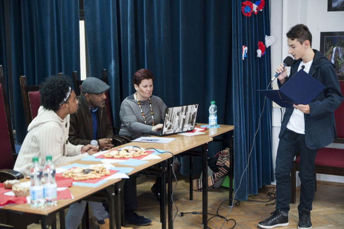

Gazeta ZSO nr II w Opolu
Numer 1/2016
Gorący Kubański Dzień w listopadowy czwartek

3 listopada klasy hiszpańskie PG10: 1c, 2c oraz 3c gościły panią Katarzynę Izydorczyk, pezes a fundacji „Moja Dominikana” i „Moja Kuba”, która przyjechała do „Dziesiątki” wraz ze specjalnymi gośćmi Haberem Fernandezem Leyvą, Yoilanem Perezem i Samem Abera z Kuby.
Uczniowie mieli okazje poznać prawdziwa Kubę; słuchali opowieści o historii, kulturze, tradycjach muzyce i rytmach wszechobecnej na wyspie salsy, a także o codziennym życiu Kubańczyków. Uczniowie klasy II przeprowadzili ciekawy wywiad z Haberem i Yoilanem, oczywiście w języku hiszpańskim.
Dowiedziawszy się o akcji fundacji „Moja Kuba” dotyczącej pomocy w odbudowie domów w Baracoa na Kubie, która bardzo ucierpiała podczas huraganu Metthew jaki nawiedził Kubę w październiku br. uczniowie postanowili przyłączyć się do akcji robiąc sobie zdjęcie z napisem #help Baracoa i umieszczając je na facebooku.
Haber Fernandez, który jest instruktorem tańca, przeprowadził niesamowite warsztaty salsy dla uczniów.
Spotkaniu z Kubańczykami towarzyszył ogrom pozytywnych emocji, wszystkim udzielił się pogodny kubański temperament.
Organizatorkami spotkania były: koordynatorka sekcji hiszpańskiej w PG10 - Katarzyna Zając i nauczycielka j. hiszpańskiego – Agnieszka Bączkowska
ul. Pułaskiego 3
45-048 Opole
tel. 077 45 422 86
fax 077 02 18 87
e-mail:
bez.tytulu@o2.pl
Ola Orłowska
DTP
Michał Woś
Opiekun
mgr Lucyna Rudnik
Ola Orłowska, Ania Cichy, Dagmara Cioska, Julia Nowicka, Julia Marcinów, Hania Szarzewicz, Michał Woś, Bartek Lipnicki, Jonasz Mularz, Paweł Kubacki, Mateusz Pietruszyński, Mateusz Orlik